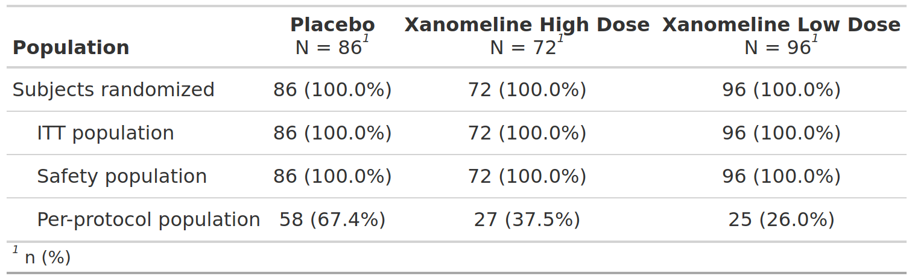

FDA Table 04
Patient Disposition, Pooled Analyses
table
FDA
safety
disposition
Code
# Load libraries & data -------------------------------------
library(dplyr)
library(gtsummary)
library(formatters)
adsl <- random.cdisc.data::cadsl
# Pre-processing --------------------------------------------
pop_vars <- c("SAFFL", "ITTFL")
lbl_pop_vars <- c("Safety population", "ITT/mITT population")
adsl <- adsl %>%
mutate(across(everything(), ~ case_when(
is.na(.) ~ "Missing",
TRUE ~ as.character(.)
))) %>%
mutate(
across(all_of(pop_vars), ~ with_label(. == "Y", lbl_pop_vars[match(cur_column(), pop_vars)])),
DISCSD = with_label(EOTSTT == "DISCONTINUED", "Discontinued study drug"),
DISCSD_AE = with_label(EOTSTT == "DISCONTINUED" & DCSREAS == "ADVERSE EVENT", "Adverse event"),
DISCSD_LOE = with_label(EOTSTT == "DISCONTINUED" & DCSREAS == "LACK OF EFFICACY", "Lack of efficacy"),
DISCSD_PD = with_label(EOTSTT == "DISCONTINUED" & DCSREAS == "PROTOCOL DEVIATION", "Protocol deviation"),
DISCSD_DT = with_label(EOTSTT == "DISCONTINUED" & DCSREAS == "DEATH", "Death"),
DISCSD_WBS = with_label(EOTSTT == "DISCONTINUED" & DCSREAS == "WITHDRAWAL BY SUBJECT", "Withdrawal by subject"),
DISCSD_OTH = with_label(EOTSTT == "DISCONTINUED" & DCSREAS == "OTHER", "Other"),
DISCS = with_label(EOSSTT == "DISCONTINUED", "Discontinued study"),
DISCS_DT = with_label(EOSSTT == "DISCONTINUED" & DCSREAS == "DEATH", "Death"),
DISCS_LFU = with_label(EOSSTT == "DISCONTINUED" & DCSREAS == "LOST TO FOLLOW-UP", "Lost to follow-up"),
DISCS_WBS = with_label(EOSSTT == "DISCONTINUED" & DCSREAS == "WITHDRAWAL BY SUBJECT", "Withdrawal by subject"),
DISCS_PHD = with_label(EOSSTT == "DISCONTINUED" & DCSREAS == "PHYSICIAN DECISION", "Physician decision"),
DISCS_PD = with_label(EOSSTT == "DISCONTINUED" & DCSREAS == "PROTOCOL VIOLATION", "Protocol deviation"),
DISCS_OTH = with_label(EOSSTT == "DISCONTINUED" & DCSREAS == "OTHER", "Other")
)Code
tbl <- adsl %>%
gtsummary::tbl_summary(
by = "ARM",
statistic = list(all_dichotomous() ~ "{n} ({p}%)"),
include = all_of(c(
pop_vars,
"DISCSD", "DISCSD_AE", "DISCSD_LOE", "DISCSD_PD", "DISCSD_DT", "DISCSD_WBS", "DISCSD_OTH",
"DISCS", "DISCS_DT", "DISCS_LFU", "DISCS_WBS", "DISCS_PHD", "DISCS_PD", "DISCS_OTH"
)),
digits = list(gtsummary::all_categorical() ~ c(0, 1))
) %>%
add_overall(last = TRUE) %>%
# Define which variables are children of parent variables
modify_table_styling(
columns = "label",
rows = variable %in% c(
"DISCSD_AE", "DISCSD_LOE", "DISCSD_PD", "DISCSD_DT",
"DISCSD_WBS", "DISCSD_OTH"
),
text_format = "indent"
) %>%
modify_table_styling(
columns = "label",
rows = variable %in% c(
"DISCS_DT", "DISCS_LFU", "DISCS_WBS", "DISCS_PHD",
"DISCS_PD", "DISCS_OTH"
),
text_format = "indent"
) %>%
# Make all but main categories display as levels
modify_table_body(
~ .x %>%
mutate(row_type = case_when(
variable %in% c(pop_vars, "DISCSD", "DISCS") ~ "label",
TRUE ~ "level"
))
)Warning: The `text_format` argument of `modify_table_styling()` must be one of "bold" or
"italic" as of gtsummary 2.0.0.
ℹ Update function call to `modify_table_styling(x = ., columns = "label", rows
= variable %in% c("DISCSD_AE", "DISCSD_LOE", "DISCSD_PD", "DISCSD_DT",
"DISCSD_WBS", "DISCSD_OTH"), indent = 4L)`.Warning: The `text_format` argument of `modify_table_styling()` must be one of "bold" or
"italic" as of gtsummary 2.0.0.
ℹ Update function call to `modify_table_styling(x = ., columns = "label", rows
= variable %in% c("DISCS_DT", "DISCS_LFU", "DISCS_WBS", "DISCS_PHD",
"DISCS_PD", "DISCS_OTH"), indent = 4L)`.$tbl_summary{cards} data frame: 428 x 12 group1 group1_level variable variable_level context stat_name stat_label stat fmt_fun warning error gts_column
1 ARM A: Drug X ITTFL TRUE dichotom… n n 134 <fn> stat_1
2 ARM A: Drug X ITTFL TRUE dichotom… N N 134 0 stat_1
3 ARM A: Drug X ITTFL TRUE dichotom… p % 1 <fn> stat_1
4 ARM A: Drug X SAFFL TRUE dichotom… n n 134 <fn> stat_1
5 ARM A: Drug X SAFFL TRUE dichotom… N N 134 0 stat_1
6 ARM A: Drug X SAFFL TRUE dichotom… p % 1 <fn> stat_1
7 ARM A: Drug X DISCSD TRUE dichotom… n n 42 <fn> stat_1
8 ARM A: Drug X DISCSD TRUE dichotom… N N 134 0 stat_1
9 ARM A: Drug X DISCSD TRUE dichotom… p % 0.313 <fn> stat_1
10 ARM A: Drug X DISCSD_AE TRUE dichotom… n n 3 <fn> stat_1ℹ 418 more rowsℹ Use `print(n = ...)` to see more rows
$add_overall{cards} data frame: 161 x 10 variable variable_level context stat_name stat_label stat fmt_fun warning error gts_column
1 ITTFL TRUE dichotom… n n 400 <fn> stat_0
2 ITTFL TRUE dichotom… N N 400 <fn> stat_0
3 ITTFL TRUE dichotom… p % 1 <fn> stat_0
4 SAFFL TRUE dichotom… n n 400 <fn> stat_0
5 SAFFL TRUE dichotom… N N 400 <fn> stat_0
6 SAFFL TRUE dichotom… p % 1 <fn> stat_0
7 DISCSD TRUE dichotom… n n 120 <fn> stat_0
8 DISCSD TRUE dichotom… N N 400 <fn> stat_0
9 DISCSD TRUE dichotom… p % 0.3 <fn> stat_0
10 DISCSD_AE TRUE dichotom… n n 14 <fn> stat_0ℹ 151 more rows
ℹ Use `print(n = ...)` to see more rows